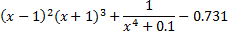

Dla wybranej funkcji jednej zmiennej porownac działanie wszystkich
sześciu metod.
Dla kazdej grupy pokazac przynajmniej jeden przypadek, kiedy
metody zawodza.
Narysować wykres funkcji uzywajac octave:

Dokonac przyblizenia ewentualnych miejsc
zerowych na wykresie (zawężając przedział wykresu). Co obserwujemy ?
Zbadać działanie metod dostępnych w octave:
fsolve
oraz fzero
dla poszukiwania
pierwiastków tej funkcji. Zwrocic uwage na dodatkowe informacje zwracane
przez funkcje fsolve (info). Czy wszystkie znalezione pierwiastki sa
dobre ?